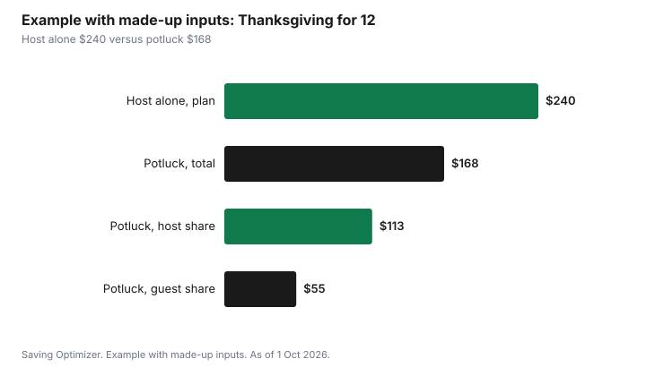

Events · Canada
Thanksgiving Dinner on a Budget in Canada (2026): Turkey Math, Potluck Splits and Leftovers

Thanksgiving dinner on a budget in Canada comes down to three decisions made in order: how many people are eating, how much turkey that headcount needs, and which dishes guests bring. Thanksgiving 2026 is Monday 12 October, so most families eat on the Sunday or the Monday of the long weekend. Turkey Farmers of Canada suggests about 450 g (1 lb) of whole turkey per person, or about 700 g (1.5 lb) if you want leftovers. Health Canada says to thaw a frozen bird in the fridge for about 24 hours per 2.5 kg and to cook a whole bird to 82°C. Buy to the headcount, split the sides, and plan the leftovers before the first slice, and the meal costs less without looking smaller.
Key takeaways
- Thanksgiving 2026 is Monday 12 October. Set the headcount by the Tuesday before so the turkey size is a calculation, not a guess.
- Turkey Farmers of Canada sizing: about 450 g of whole turkey per person, or 700 g per person for leftovers.
- Health Canada: thaw in the fridge about 24 hours per 2.5 kg, cook a whole bird to 82°C, stuffing and leftovers to 74°C, and refrigerate leftovers within two hours.
- Grocery prices from stores were up 2.8% year over year in August 2026, according to Statistics Canada, so last year's receipt is a floor, not a forecast.
- Example with made-up inputs: a 12-person dinner planned at $240 lands at $168 with a potluck split and a smaller bird.
Start with the headcount, not the flyer
The flyer will tell you what is on sale. It will not tell you how much food you need. The number that drives every other line of a Thanksgiving budget is the count of people who will actually sit down, split into adults, teens and small children. Small children eat less than adults, and a teenager can eat more than either. Write the count on the shopping list before you open a flyer, then shop to the count.
Ask for replies by the Tuesday before. With the holiday on Monday 12 October, most grocery stores put their turkey features in the flyer that runs into the long weekend, and a frozen bird needs days in the fridge to thaw. A reply deadline gives you time to buy a turkey that fits instead of the largest one left in the freezer case on Saturday.
Statutory holiday hours matter too. Thanksgiving is a statutory holiday in most provinces and territories, though not in all of Atlantic Canada, and many grocery stores close or shorten hours on the Monday. Plan to finish shopping by the Saturday. A forgotten ingredient on Monday morning often means a convenience-store price.
| Who | Count | Whole turkey needed (no leftovers) | Whole turkey needed (with leftovers) |
|---|---|---|---|
| Adults and teens | Your number | Count × 450 g | Count × 700 g |
| Young children | Your number | Count half portions as a guide | Count half portions as a guide |
| Total | Sum | Round up to the nearest bird size | Round up to the nearest bird size |
Turkey math: size, price per kilogram and the bird you actually need
Turkey Farmers of Canada's buying guide suggests about 450 g (1 lb) of whole turkey per person, or about 700 g (1.5 lb) per person if you want leftovers. Its whole-turkey calculator uses the same estimates. For 10 adults without leftovers that is about 4.5 kg. For the same table with leftovers it is about 7 kg. The weight includes bone, which is why the per-person figure looks generous.
Compare birds by price per kilogram, not by the price on the bag. A larger bird at a lower price per kilogram is only cheaper if you eat the extra meat. If leftovers usually go in the bin by Thursday, buy the smaller bird. If leftovers become sandwiches, soup and a freezer meal, the larger bird can lower the cost of the following week's lunches.
Fresh or frozen? A fresh turkey skips the thaw, but usually costs more per kilogram and has a short window between purchase and cooking. A frozen turkey is often the lower price per kilogram, and the price features in the week before Thanksgiving tend to be on frozen birds. The trade-off is fridge space and time. A bone-in turkey breast or a few thighs can feed a small table for much less than a whole bird; Turkey Farmers of Canada's grilling guide lists about 125 g of boneless breast or about 250 g of bone-in pieces per serving.
| Adults at the table | No leftovers | With leftovers |
|---|---|---|
| 4 | About 1.8 kg (a bone-in breast or small bird) | About 2.8 kg |
| 6 | About 2.7 kg | About 4.2 kg |
| 8 | About 3.6 kg | About 5.6 kg |
| 10 | About 4.5 kg | About 7.0 kg |
| 12 | About 5.4 kg | About 8.4 kg |
Thawing and cooking: Health Canada's numbers
A frozen turkey bought on the Saturday will not be ready on the Sunday. Health Canada's guidance is to thaw a turkey in the refrigerator, in its original wrapping on a tray, for about 24 hours for every 2.5 kg (5 lb). Its thawing table runs from about 24 hours for a bird of about 2.27 kg to about 72 hours for one of about 6.8 kg. A 7 kg bird for a Sunday dinner should go into the fridge by Wednesday or Thursday. Health Canada also describes thawing in cold water, with the water changed every 30 minutes, which is faster but needs attention.
Cook to temperature, not to colour or time alone. Health Canada's safe internal temperature for a whole turkey is 82°C, measured with a digital food thermometer in the thickest part of the thigh, not touching bone. Pieces of poultry and stuffing cooked separately should reach 74°C. Health Canada recommends cooking stuffing outside the bird. Stuffing cooked inside is harder to bring to a safe temperature without overcooking the meat, and a thermometer costs less than a ruined dinner.
| Step | Health Canada guidance |
|---|---|
| Thaw in the fridge | About 24 hours per 2.5 kg (5 lb), in the original wrapping on a tray |
| Whole turkey | Cook to 82°C internal temperature |
| Turkey pieces and stuffing | Cook to 74°C |
| Gravy | Bring to a rolling boil before serving |
| Leftovers | Refrigerate within 2 hours; eat within 2 to 3 days; reheat to 74°C |
The potluck split: who brings what, and how to keep it fair
A potluck is the single biggest lever on the cost of a Thanksgiving dinner, because the sides together often cost as much as the turkey. Give every household a category rather than a free choice, or you can end up with four desserts and no vegetables. The host usually takes the turkey, gravy and stuffing, because those depend on the oven and the bird.
Hand out the list in writing with a quantity next to each item, for example a vegetable side for 12, rolls for 12, or two pies. Quantities stop a guest from bringing a dish for four to a table of twelve. Ask about allergies and dietary needs at the same time, and put the answer on the list so every cook sees it.
If some guests would rather not cook, ask them to bring drinks, ice, takeaway containers or a bag of ice and a bottle of sparkling water. Those items cost money too, and they move a line off the host's budget. Some families split the grocery receipt instead: the host shops for everything, and each household sends an equal share by e-transfer. That works best when the host shares the receipt so nobody wonders about the number.
| Category | Who | Quantity | Notes |
|---|---|---|---|
| Turkey, gravy, stuffing | Host | For the headcount | Oven and thermometer stay with the host |
| Potatoes or a starch | Guest household 1 | For the headcount | Mashed, roasted or scalloped |
| Vegetable sides | Guest household 2 | Two dishes for the headcount | At least one without dairy if needed |
| Salad and rolls | Guest household 3 | For the headcount | Rolls bought or baked |
| Dessert | Guest household 4 | Two pies or one large dessert | Pumpkin pie is the usual |
| Drinks, ice, containers | Non-cooking guests | Enough for the table | Containers become leftover packs |
Sides, pantry and the shopping list
Thanksgiving sides are mostly root vegetables, squash, bread and dairy, which tend to be in season in October and are often featured in flyers before the long weekend. Build the list from the menu, then subtract what is already in the pantry: flour, spices, broth, butter and sugar are often there from earlier baking. A pantry check before you shop prevents the second jar of sage.
Statistics Canada reported that prices for food purchased from stores were 2.8% higher in August 2026 than a year earlier, down from 3.1% in July. That was the first time since July 2024 that grocery inflation was below headline inflation, which was 3.0% in August. In practice, last year's Thanksgiving receipt is a floor for this year's, not a forecast. Add a small buffer to the total, or plan one fewer dish.
Store brands are worth a look for the ingredients nobody tastes on their own: broth, canned pumpkin, cranberry sauce, flour and butter. Cooking from scratch is usually cheaper than buying prepared sides, but a prepared pie can be the right call if oven time is the bottleneck. Price the scratch version against the bakery version before deciding, and remember the oven is busy with the turkey for hours.
Leftovers: plan them before the first slice
Health Canada's holiday food safety page says to refrigerate leftovers within two hours of cooking and to eat them within two to three days. Its poultry page puts the window at two to four days for cooked poultry. Use the shorter window when in doubt. Reheat leftovers to 74°C and do not reheat them more than once. Store turkey separately from stuffing and gravy, in shallow containers so the food cools quickly.
Planning the leftovers is how a larger bird pays for itself. Before dinner, set out containers and decide what goes home with guests and what stays. Freeze turkey you will not eat within the window; it keeps well for soup, pot pie or sandwiches later in the month. Strip the carcass the same night and boil it for stock if you have the time. Write the date on every container.
Example with made-up inputs: a 12-person dinner
These numbers are an example with made-up inputs. They are not store prices. A host plans Thanksgiving for 10 adults and 2 young children and writes down a $240 grocery budget for doing everything alone: $90 for the turkey, $80 for sides, $40 for dessert and $30 for drinks.
The host then switches to a potluck. Three households take potatoes, vegetables and dessert, and a fourth brings drinks. The host checks the sizing table and buys a smaller bird for about 11 people with some leftovers instead of the largest one in the freezer, at $68. Stuffing, gravy and rolls cost the host $45. A shared drinks contribution covers the rest. The host's spending falls to $113, and the guest households spend $55 between them on top of what they would have bought for their own dinners. The total for the meal is $168, compared with the $240 plan.
| Line | Host alone (plan) | Potluck (actual) |
|---|---|---|
| Turkey | $90 | $68 |
| Stuffing, gravy, rolls | Included in sides | $45 |
| Sides | $80 | $25 (guests) |
| Dessert | $40 | $18 (guests) |
| Drinks | $30 | $12 (guests) |
| Total | $240 | $168 |

Common mistakes that raise the bill
- Buying the biggest bird left on Saturday because the headcount was never fixed.
- Forgetting the thaw time and paying for a fresh turkey at the last minute.
- Letting every guest choose freely and ending up with four desserts.
- Skipping a thermometer, then overcooking the turkey to be safe.
- Leaving leftovers on the table through dessert and coffee, past Health Canada's two-hour window.
- Buying single-use decor for one dinner. A candle, a tablecloth and fall leaves from the yard do the job.
A timeline for the long weekend
| When | What to do |
|---|---|
| Tuesday 6 October | Fix the headcount and send the potluck list with quantities |
| Wednesday 7 October | Buy a frozen turkey; check the flyer for the price per kilogram |
| Wednesday or Thursday | Move the turkey to the fridge to thaw at about 24 hours per 2.5 kg |
| Saturday 10 October | Finish shopping before holiday hours; make dessert or cranberry sauce ahead |
| Sunday 11 October | Cook to 82°C; set out leftover containers before serving |
| Within 2 hours of serving | Refrigerate leftovers; freeze what will not be eaten within 2 to 3 days |
For the rest of the season, the same logic carries over: a headcount, a written total and a split of who brings what. Keep Thanksgiving's receipt as a reference for Christmas dinner, and plan the month as a whole with the December spending plan.
Sources
- Turkey Farmers of Canada, Buying a Whole Turkey and Whole Turkey Calculator, canadianturkey.ca, as of 1 Oct 2026. About 450 g per person, or 700 g per person with leftovers.
- Turkey Farmers of Canada, grilling guide, as of 1 Oct 2026. About 125 g boneless breast or 250 g bone-in pieces per serving.
- Health Canada, Poultry safety, canada.ca, as of 1 Oct 2026. Fridge thawing about 24 hours per 2.5 kg; thawing table; leftovers within 2 hours.
- Health Canada, Holiday food safety, canada.ca, as of 1 Oct 2026. Stuffing outside the bird, gravy to a rolling boil, leftovers eaten within 2 to 3 days and reheated to 74°C.
- Health Canada, Safe internal cooking temperatures, canada.ca, as of 1 Oct 2026. Whole poultry 82°C; poultry pieces and stuffing 74°C.
- Statistics Canada, Consumer Price Index, August 2026, The Daily, 14 Sep 2026, and table 18-10-0004-01. Food purchased from stores +2.8% year over year; all-items +3.0%.
- Calendar: Thanksgiving is Monday 12 October 2026.
- The $240 plan, the $168 total and every amount in the example table and chart are an example with made-up inputs.
Frequently asked questions
When is Thanksgiving in Canada in 2026?
Thanksgiving in Canada is Monday 12 October 2026. Many families eat on the Sunday or the Monday of the long weekend. Grocery stores often close or shorten hours on the Monday, so finish shopping by the Saturday.
How much turkey do I need per person?
Turkey Farmers of Canada suggests about 450 g (1 lb) of whole turkey per person, or about 700 g (1.5 lb) per person if you want leftovers. For 10 adults that is about 4.5 kg without leftovers or about 7 kg with them.
How long does a turkey take to thaw in the fridge?
Health Canada says to thaw a turkey in the refrigerator for about 24 hours for every 2.5 kg (5 lb). A bird of about 6.8 kg needs about 72 hours, so a Sunday dinner means moving it to the fridge by Wednesday or Thursday.
What temperature should a turkey be cooked to in Canada?
Health Canada's safe internal temperature for a whole turkey is 82°C, measured in the thickest part of the thigh. Turkey pieces, stuffing and reheated leftovers should reach 74°C.
How long are Thanksgiving leftovers safe?
Health Canada says to refrigerate leftovers within two hours and eat them within two to three days, reheating to 74°C and not more than once. Freeze anything you will not eat in that window.
How do I split Thanksgiving costs with family?
Give each household a category and a quantity, such as a vegetable side for 12 or two pies, while the host takes the turkey, stuffing and gravy. Another option is for the host to shop for everything and share the receipt so each household can send an equal share.
Researched and drafted with AI assistance and fact-checked against official Canadian sources. How we create content.
Disclosure: Saving Optimizer may earn a commission if a partner link is added later. No partnership is claimed on this page, and no store, brand or product is ranked. Education only. Follow Health Canada's food safety guidance and product labels.